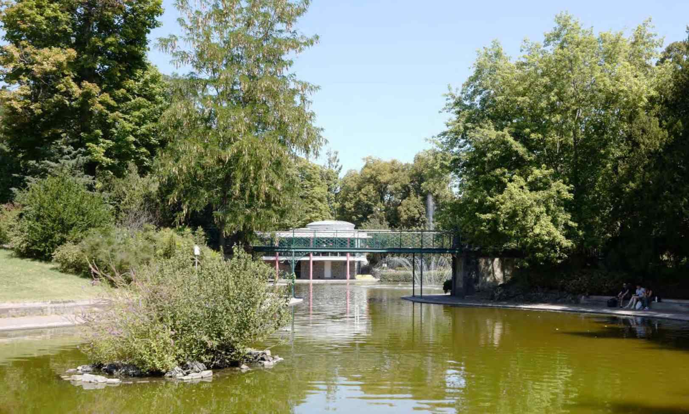

Survolez l'image et agrandissez/réduisez la vue à l'aide de la molette.
Budget: / €
Surface: 5.2 ha
Date début: 2023
Date fin: en cours
Maîtrise d'ouvrage: Bouygues Immobilier
Co-traitant(s): Alexandre Chemetoff & associés, CRR Architectes
Description:
Des terrains en prolongement des rues du centre de la ville,
entre les abords de la Cathédrale et les quartiers habités en limite de la
campagne au pied du Puy de Chanturgue, sur les chemins qui du Nord au Sud,
menaient autrefois des caves aux vignes.
Le site avant d’être regardé comme un tissu de contraintes est utilisé
comme un ensemble de ressources.
L’héritage de l’activité industrielle constitue le point de départ
de la composition urbaine et programmatique
Une trame d’espaces publics et privés qui dessine un réseau hiérarchisé de
rues et de passages, de traverses, de sentes, de places, de jardins et de parcs.
À partir de là, les différents îlots définis sont construits selon des gabarits,
des hauteurs et des dimensions variables.
{kind=link}
{kind=link}
{kind=link}
{kind=link}